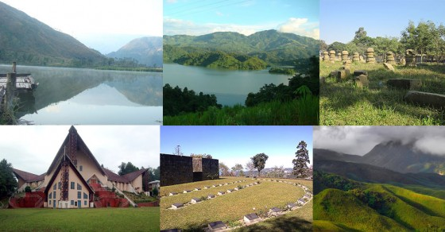

Nagaland is a mountainous state in northeast India, bordering Myanmar.
It's home to diverse indigenous tribes, with festivals and markets celebrating
the different tribes' culture. Its capital city of Kohima suffered heavy fighting
in World War II, commemorated by memorials at the Kohima War Cemetery.
The Nagaland State Museum exhibits ancient weaponry, a ceremonial drum
and other traditional Naga cultural artifacts.
Formation: 1 December 1963
Capital: Kohima
Highest elevation (Mount Saramati): 3,826 m (12,552 ft)
Population: 22.8 lakhs (2012)
Chief minister: Neiphiu Rio
Governor: RN Ravi

Climate
Climate. Nagaland has a largely monsoon climate with high humidity levels.
Annual rainfall averages around 1,800–2,500 millimetres (70–100 in), concentrated
in the months of May to September. Temperatures range from 21 to 40 °C (70 to 104 °F).
Best time to visit
The best time to visit Nagaland is between April and May,
as the weather is very pleasant and moderate.
How can you reach Nagaland?
Air- Dimapur, at distance of around 75 km from Nagaland, is the closest domestic airport.
Train- Nearest railway station is Dimapur, which is well-connected to Kolkata and Guwahati.
Road- One can take a share taxi from Dimapur railway station (Rs 200) and reach Kohima.